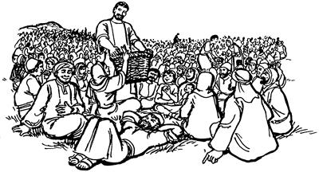
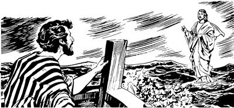

Yesusti yubu sembe Nazaret nimiri karong seeka
(Matius 13:53-58; Lukas 4:16-30)
6
1 As Kapernaum aneko laplobi agha Yesusap eldi yubu ka'ero neleptopnangap eldi asag piek. 2-3 Piekti, Allah yubu lerop sum taogpa, Yahudi nimiri poloro winirop aeag wa'iekpa, Yesusti Allah yubu ambarelamsiog. Ambarelamsiogpa, eldi asag nimi maikno wamekne taneko Yesusti ambarelamsiogne ka'ebaekti, “Yaghe,” seek. Seek aghana, sindi wanaag karong senelamekti, sin mamun hailtalamekti, “El neneko etneri wana hekaoba, undo ambarelamsil? Mikip huropneag agha eldi sae pere agha nimiri uanep komne, Allah Eldamneri uanep saogne ulamla? Nimi enena, Mariam elme ae soropne neneko ane. Ilipsabo Yakobusap, Yosesap, Yudasap, Simonap wamangne nu el. Ilipsa'elabo babe tane wamang. Nimi eneko kom to?” aro karong senelamekti, eldi yubu wa'epto ka'elamek kom.4 Karong senelamekti, ka'elamek komne sembe, Yesusti ambarelamsiogti, “Allahri yubu silimu tiptop nimi elenge asag agha lambahori, yog nimiri asag Allah yubu ambatsisoba, yog asag nimiri el kipto ka'erop. Ot Allahri yubu silimu tiptop nimiri elenge asag Allah yubu ambatsirop tanena, eldi ae lom nimiri babe, elenge asag nimiri babe el kipto ka'erop kom,” aro ambatsiog.
5-6 As aneko wamek nimiri elag “Sikne” aro wana palilamek komne sembe Yesusti eldi wanaag, “Yaghe, huro sik senelamang komba” sembaog. El sin Nasaret nimi nusamag wamogpa, elag sikne aro wana palilamek kombana, “Allahri Yesus pere agha ual,” senenne kekneba uanep kom saog wamog. Ot nimi etpare naiklamek nimi as anekoag wamekpa, Yesusti sinag sae pipsiogti, wali nembahiog. Nasaret nimiri sik senelamek komne sembe Yesusti, “Yaghe,” senelamogti, as kanero wamek nimi taneko “Ka'ebaukang,” aro nhon asag, nhon asag pina, Allah yubu ambatto poa yabalamsiog.
Yesusti aobarenang “Ambarel phululom,” aro pogsiogha
(Matius 10:5-15; Lukas 9:1-6)
7 Allah yubu ambatto poa tongolamsiekti, eldi yubu ka'ero neleptopnang aobare abeneko “Yahut,” aro yopsiog. Yopsiogti, ambarelamsiogti, “A'un nimi aobare wamlomne tane phende-phende palamlulom. Nari a'un poglamsinnena, ‘Palapmundi, phia nimi kulomag ulamsiangne yag lanalamsululom,’ aro nari mikipne a'unag palilamsin,” aro pogsiog. 8 Poglamsiog abeneko pere aruklamsiogti, “Ot kame tunguna saelbapmundi pululom. Orange pabaheng kom. Kwaneng teroba babe, ag nubunge babe, kal ma'al babe pabaheng kom. 9 Palapmunne, yan sangag wangaropne enekalulom. Ag nongag wangkapmunne babe, hai pabalulom aghana, ag nongag wangkaneba phendepne pabaheng kom. 10 As nhonag wa'al pimunba, ae ngainge nhondi, ‘Nari aeag malamturom,’ seleba, wapmundi, ae enekoag aghabog malamlulom. As anekoag ambarelamsimundi, nhon aeag mal pang, nhon aeag mal pang uaheng kom. Ot nimi nhondi aeag malapmundi, as anekoag wamik nimi sembe komopto ambatsimun taneogna, laplobi agha as anekoa lambamundi, wali pululom. 11 Aghana a'un as nhonag pimunba, nimi tanekori a'undi yubu ka'ebaik kom tanena, as aneko laplobi agha pululom. Laplobi agha palapmundi, so'o ubun yanag wamlenge po'oro pelengkalulom. Po'oro pelengkipmunne ane as aneko nimiri kembaikti, ‘Malia lebobonge ane Allahri ipsildi, nu opsileagti,’ sembaukang,” seog.
12 Seogpa, aobarenang aneko piekti, “A'undi mali-malia uropne lepsisut,” aro ambarelamsiek. 13 Ambarelamsiekti, Yesusti sinag mikipne pipsiogneag agha phia nimi kulomag ulamogne maikno yag lanalamsiek. Nimi niktop nimi maikno babe kemelamsiekti, kal saitun wana lolterop mag usoghag pelaglamsiekti, Yesus poneko mikipne pere agha wali nenelamsiek.
Nimiri Yesus sembe senelameka
(Matius 14:1-2; Lukas 9:7-9)
14-15 Undo unulamekpa, nimiri Yesusti ulamogne sembe a'ero-a'ero seneraglamek. Nenneri, “Allah yubu silimu tiplamek nimiri samenag ulamek saog uro, el babe Allah yubu silimu tiptopne wamlari ulamla,” senelamek. Nenneri, “Allah yubu silimu tiptopne Elia nen samoro yaori, el agha ane to?” senelamek. Nimi nhon-nhondi Yesus sembe senelamekti, “El Yohanes, nimi maghag pelengehiropne poneko wamla. Yohanes poneko samenag tebao aghana nen kamag tangka yao. El kamag tao ane sembe, nimiri uanep komne Allahri mikipne el pere agha ulamla,” aro lelamek. Nimiri Yesusti ulamogne sembe maiknoro lelamekpa, mog so'o Galilea nimi sembe yubu sia leropne Herodesti babe ka'ebaog. 16 Herodesti ka'ebaogti, el lobaro seneragto lelamogti, “Ane sik Yohanes. Samen nari arukahinoba, nimiri Yohanes ngang karebaongpa, tebao. Aghana, wene el nen samoro kamag tao,” seog.
Yohanes maghag pelengehiropne obeka
(Matius 14:3-12; Lukas 3:19-20)
17-18 Yubu sia leropne Herodesti Yohanes obogne undo uro yabiog.
Samen Herodes ilipsae Pilipus wamog. Pilipus elkel Herodias wamogpa, yubu sia leropne Herodes ponekori ilipsaeri kel eneko pelepto aog. Pelebaogne sembe Yohanesti Herodesag yubu lelamogti, “An anipsaeri kel pelebaomne nene, Allahri yubu lebogne irikna phiro uaom,” aro wembaog. Wembaog ane sembe, Herodesti pelepto aog keleneko Herodiasti ela'angeag lelamogti, “Yohanes nene saelbamendi, haing sae kaupto kop aeag tobongkalulam,” seog. Seogpa, Herodesti nimi arukahiogpa, Yohanes salero haing sae kaupto tobongkibek.
19-20 Wembaogne sembe Herodes elkel Herodiasti, “Yohanes ya'ag omnun,” aro yo senelamog. Yo senelamog aghana, ela'ange Herodesti, “Yohanes poneko nimi sikne Allah Eldamneri poghogne wamlari, walia ulamla,” aro el wamog. Ane sembe Herodesti Yohanes yae urop nimiag, “Yohanes poneko wali uro piamlulom,” aro arukamsiogpa, elkel Herodias nenekori “Yohanes omnun,” sembaog aghana, omnep kom wamog. Wamogpa, yubu sia leropne Herodesti babe Yohanesti ambarelamog yubu ka'elamog abeneko pere, yeng uro ka'elamog aghana, elkel Herodias pelebaogne sembe “Huahane?” aro enhaun seog.
21 Olog wamekpa, ik nhon sum yubu sia leropne Herodesti, “Na mangkaneek sum kwelekto yabilbana sani yobatsinun,” aro nimi nubunang yopsiog. Eldi yubu eptopnangap, eldi yin saleropnang sikindoyaboap, mog so'o Galilea nimi nubunangap, “Na mangkaneek sum talbana, sani nikag tukap,” aro yopsiog. Yopsiog sumeneko elkel Herodiasti, “Sumene ‘Yohanes omnun,’ senelamnange pa'asea sumene agha,” sembaog. 22 Sembaogpa, sani nikag telamekne pere agha Herodias elmangkel wa'iogti, saren kelenekori nimi nubunang taneko whing toman kolapto seplamog. Kolapto seplamogpa, Herodesap elap nikag telamek nimiapti, “Saren kelene wali uro kolapto seplamla,” aro awi sembaek. Awi sembaekpa, yubu sia leropne Herodes ponekori saren kel enekoag, “Nanag molbane. Andi ‘Sa'a-sa'a tatneho,’ senelamlama tatkenun. 23 Nari saelbamna mog so'o molbanemena babe, naringe nhon andinge nhon pokto tatkenun. Sik lemna. Andi molbanemena tatkene kom tanena, Allah imnelne ponekori hae omnelul,” aro salag lebog.
24 Wene seogpa, saren kel enekori ilin Herodiasag hail palamogti, “Kaen, na sa'a moloro anun?” aro haibaog. Haibaogpa, ilindi samoro ambarelamogti, “ ‘Yohanes maghag pelengehiropne ngang karepto olopmenba, usog imnun,’ aro Herodesag molbalulam” seog.
25 Wene seogpa, ta'ap sen koma saren kel eneko Herodes yaghag samoro piog. Piogti mololamogti, “Nai, nari anag mololangkennena, Yohanes maghag pelengehiropne tebalul. Eldi usog ngangag agha karepto olobikti, usog yangkarobag paia tarelaikpa, imnun,’ aro mololangken,” seog. 26 Molbaogha aneko ka'ebaogti, yubu sia lenne Herodes poneko wana ikin taog. Wana ikin taog aghana, eldi wanaag seneraglamogti, “Kwaneng nhon telamap nimi taneko whingag, ‘Tatkene kom tanena Imagneri omnelul,’ aro salag pimna,” aro seneraglamogti aliri, “Kom senep komdi, hae tatnun,” sembaog.
27 Wene sembaogti, ta'ap sen koma yin salero nimi ohirop nimi nhonag, “Kelenekori, ‘Yohanes maghag pelengehiropneri usog imnun,’ selba kop aeag karebel pimendi payalulam,” aro arukaog. 28 Ane sembe nimi nenekori Yohanes piamekag aneko piogti, Yohanes usog ngangag agha karebel pina yangkarobag pibogti, Herodias elmangkel tarel aog. Tarel aogpa, saren kel enekori tipto ilinag ‘Iplul' aro tarel piog.
29 Wene aro obekpa, Yohanesti yubu ka'ero neleptopnangdi ka'ebaekti, Yohanes nong teptoba tol aek. Tol aekti, Yohanes nong teptoba aneko pabiekti, kirik selenga lomag pail piek.
Yesusti nimi teng-tengne (5.000) kwaneng tatsiogha
(Matius 14:13-21; Lukas 9:10-17; Yohanes 6:1-14)
30 Yesusti wepto pogsiognang taneko nen samoro Yesus yaghag yaek. Yaekti sikindi nimi yepto ulamekneap, nimi Allah yubu ambarelamsiekneap sembe Yesusag ambarek. 31 Ambarekpa, nimi maikno “Yesus kemel pukap,” aro pang yang ulamekneri Yesusap el neleptopnangap kwaneng tenep kom wamog. Ane sembe el neleptopnang ambarelamsiogti, “Yahut! Nu nimi oroghag piberi, olog nu wali tektek papto wamukap,” seog.
32 Wene seogpa, sin kabong lomag wa'iekti, nimi oroghag sip mag alip toman piek. 33 Piek aghana, nimi maikno sikin palameka ipsiekti, “Tanetna Yesusap el neleptopnangap agha palamang,” aro el tahiog. El tahiogpa, mog so'o anekoag wamek nimi maiknori, “ ‘Yesusap eldi yubu ka'ero neleptopnangap mag abolag anoko saingil pukap,’ aro ulamangbana, yan toman merero sin sam whing karepto pukap,” aro ulamek. 34 Yesus kabong lomag agha lambaogti tilamsiogpa, nimi teng-tengne longolameka tibogahiog. Longkamekpa kembahiogti, “Nimi taneko wana ophag aro wamangnena, pham domba paia uhirop nimi orogti, ‘Tala pukap,’ aro ophag alo pham domba saog uro wamang,” aro yareag sembahiog. Yareag sembahiogti, yubu maikno ambarelamsiog.
35 Ambarelamsiogpa, ae sin taogpa, eldi yubu ka'ero neleptopnangdi Yesusag yubu lelamekti, “Ae imbalba, mog so'o ane ae sorop komag paiag wamap. 36 Kwaneng orogti, andi nimi taneag ‘A'un koloptahut,’ aro ambatsimenba, as kanero wamangneag kwaneng teneba kamna kapto tol pukang,” seek.
37 Wene seekpa, Yesusti samoro ambarelamsiogti, “A'undi agha kwaneng tatsimunba, tukang,” seog.
Wene seogpa, sindi, “Nunag kal ma'al ologha wamlangena, tane wamang nimi teng-tengne wamangneap sunurop kom. Nuri kal ma'al agha ni tane wamang nimi sembe sunuro kwaneng tenep uro kamna kapto topsebe tanena, nimi nhondi wal linbare awe topsoba, kamna tatnep saog urop kal ma'al maikno agha kwaneng kamna kapto topsebe. Andi nunag, ‘Hae tol pululom,’ selam, te?” aro Yesusag haibaek.
38 Wene seekpa, Yesusti hailamsiogti, “A'unag kwaneng roti etpare poamlom? Kemel pululom,” seog. Kemel piekti, “Kwaneng roti taroba lambareap, ikan phendeap wamla,” aro ambarek.
39 Wene aro ambarekpa, Yesusti el neleptopnangag ambarelamsiogti, “Nimi palu a'ero-a'ero nembia, ‘O'olaba saiag puksut,’ aro ambattoa yabihilulom,” seog. 40 Seogpa, ambattoa yabihiekpa, nimi taneko teng-tengne wamek aghana, palu nhonag nimi teng phende saog uro, nhonag nimi teng tombare saog uro longoro pul piek. 41 Pukekpa, Yesusti kwaneng roti lambareap, ikan phende abenekoap tobogti, imag tiwalengkia Nuni Allahag, “Wali tatsilam,” aro kibog. Wene seogti, kwaneng roti taneko tobogti, eldi yubu ka'ero neleptopnangag, “Nimi taneko kwaneng tatsululom,” aro khepto-khepto tatsiog. Tatsiogti, ikan phende abeneko babe sop kelekto-kelekto tatsiog. Tarelamsiogpa, el neleptopnangdi nimi ni tanekoag pogto tarelamsiek. 42 Poglamsiekpa, sin ni teekpa, mon og tahiog. 43 Teekpa mon og tahiogpa, phelektopne babe wamog. Eldi yubu ka'ero neleptopnangdi kwaneng rotiap ikan sopap phelektopne poloro pibekti, haing agha kau saog uro wiroba nubunge aobare liro pibek.

44 Sin kwaneng teek nimi taneko wamek nena, kabuni mo a'ilbahin tanena, teng-tengne (5.000) wamek.
Yesus mag alibag yan toman palamogha
(Matius 14:22-33; Yohanes 6:15-21)
45 Wene kwaneng teekpa, ta'ap sen koma Yesusti eldi yubu ka'ero neleptopnangag, “A'un kabong lomag wa'imundi, na laplobi agha mag sin kauro as Betsaida sam pululom. A'un sam palapmunba, nari nimi maikno tanekoag ‘A'ununge asag phut,’ aro ambatsinun,” seog. 46 Mag sin kauro palamekpa, Yesusti nimi maikno tanekoag, “Pululom,” seog. Seogti, “Mo wamneri, Allahap yubu lemnunam,” aro main nhonag waelbaog.
47 Main nhonag yingkiogpa, imbaogpa, eldi yubu ka'ero neleptopnang kabongag agha mag sin nusamag palamekpa, Yesus el mo mag sin abolag wamog. 48 Mag abolag wamogti tilamsiogpa, mikip uro mag kau karepto palamek aghana, khao sin whingag siba yalamogneri eka'uktina, nemen uro palamek. Mag sin nusamag eka'uk uro palamekpa, tibogahiogti inipna tom nusam anabi, kwelekna anabiag, sikin wamekag mag alip toman yan ingiro piog. Palamogti, “Phibom agha pinun,” aro saog ulamog. 49-50 “Phibom agha pinun,” aro saog ulamogpa, tilamekpa, el mag alip toman yan ingiro palamogha tibogaek. Tibogaekti, inibin sembe sin kabong lomag wamekne taneko niri, “Phia yalamla,” aro log maikno seklebaekti, ngolol alamek.
Logti ngolol alamek abeneko pere Yesusti sinag yubu lelamogti, “Log sembaheng kom. Na Yesus a'unag yalamnari, wana aingniro wamsut!” seog.

51 Wene seogti, kabong lomag wamekne anekoag wa'iogpa, khao aneko aingnibaog. Eldi yubu ka'ero neleptopnang kabong lomag wamekne tanekori, “Yaghe, mane agha ual,” aro lo'om paibon seek. 52 Lo'om paibon seeknena, tam nene sembe. Yesusti kwaneng roti ologha tobogti, nimi teng-tengne kwaneng tatsiogpa, mon og uro teeka ibek aghana, anam wanaag seneraghek komdi, wana hekamsin koma wamek. Ane sembe, Yesus mag alip toman yan ingkiro mag sin nusamag yalamogpa, khao aingnibaogha ibekti, weneog, “Yaghe, Yesus poneko mikip sirikne wamla,” aro lo'om paibon seek.
Yesusti mog so'o Genesaret nimi naiklamek nimi maikno wali nembahiogha
(Matius 14:34-36)
53 Kabongag agha mag sin kauro tara sip piekti, mog so'o Genesaret saingnil ingkiekti, kabong mag abolag kerekaek. 54 Saingnil ingkiekti, kabong lomag agha lanalamek abeneko nimi maiknori sin tibogahiekti, “Yesus yal,” aro el tahiog. 55 El tahiogpa, nimi tanekori merero as nhonag pang, nhonag pang ulamekti, “Yesus yal,” aro el nenelamsiek. “Yesus tane yal,” ana ka'ebaekti, nimiri naiklamek nimi taneko morea kalag keyapto poa, “Yesus wamla,” seekag payalamsiek.
56 Yesus as nubungeag to, ologneag to, tala-tala palamogpa, “Yesus yal,” ana ka'ebaekti, nimi naiktopne poa, “Yesus whingag nembaneba, wali nembalul,” aro nimi longorobag payalamsiek. Payalamsiekpa nimi naiktopne tanekori wanaag agha Yesusag mololamekti, “Ot andi ag nongag wangkamlamne abolag babe po'obane tanena, wali tanun,” aro sarikto-sarikto mololamek. Nimi etneri eldi aghag po'olongolamek tanena, wali talamek.